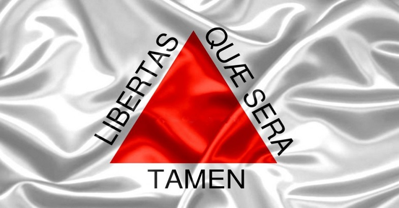
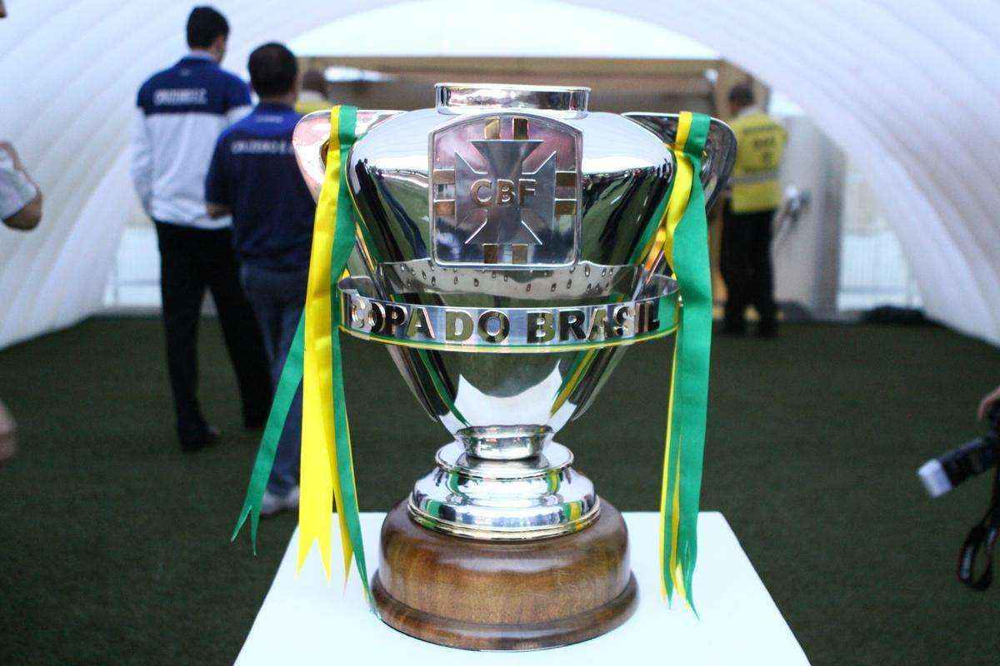

Campeonato Mineiro
Os rivais mineiros já disputaram 21 vezes a final do Campeonato Estadual, sendo 13 vezes vencidas pelo Cruzeiro e 8 vezes pelo Galo. Os títulos do Cruzeiro foram conquistados nos anos de 1940, 1967, 1972, 1977, 1987, 1990, 1998, 2004, 2008, 2009, 2011 e 2014, 2018. E os do Galo em 1954, 1962, 1976, 1985, 2000, 2007, 2013 e 2017.
Copa do Brasil 2014
A final da Copa do Brasil de 2014 foi a primeira partida que configurou uma decisão de título nacional na história do clássico mineiro